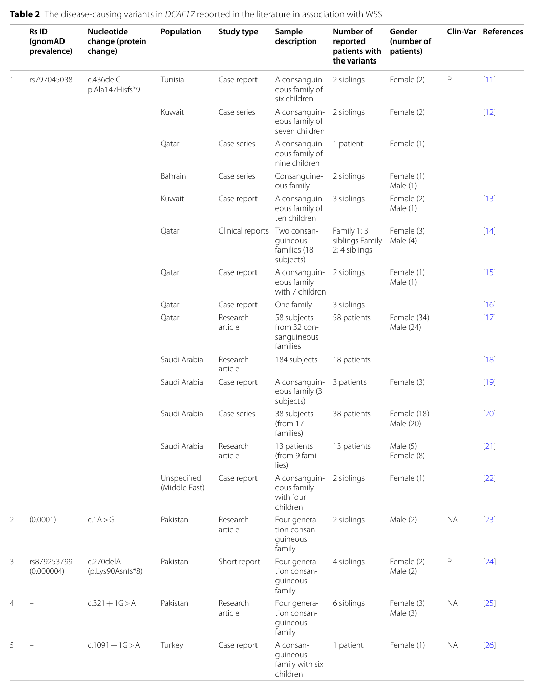

1. Disease Information
1.1 Definition and current understanding
Woodhouse–Sakati syndrome is a rare multisystem neuroendocrine disorder with core endocrine involvement (hypogonadism, diabetes, thyroid abnormalities) and progressive neurologic manifestations, caused by biallelic pathogenic variants in DCAF17 and inherited in an autosomal recessive pattern. (bakhsh2023thesuccessfulmanagement pages 1-2, louro2019woodhouse–sakatisyndromefirst pages 1-2, wakim2024woodhousesakatisyndromegenotype–phenotype pages 1-2)
Abstract-supported definition (direct quotes): - A 2023 systematic review states: “Woodhouse-Sakati syndrome (WSS) is a rare, autosomal recessive genetic disorder with variable clinical manifestations mainly affecting the endocrine and nervous systems.” (Kohil et al., Orphanet J Rare Dis, published Jan 2023; DOI: https://doi.org/10.1186/s13023-023-02614-8) (kohil2023geneticepidemiologyof pages 1-2) - A 2024 case report states WSS is “a rare autosomal recessive condition caused by biallelic pathogenic variants in the DCAF17 gene” with “fewer than 200 cases reported” and symptoms that “first emerge in middle-late adolescence.” (Irvine & Ahmad, BMC Neurology, published Sep 2024; DOI: https://doi.org/10.1186/s12883-024-03865-z) (irvine2024woodhousesakatisyndromewith pages 1-3)
1.2 Synonyms / alternative names
- Woodhouse–Sakati syndrome (WSS) (bakhsh2023thesuccessfulmanagement pages 1-2, louro2019woodhouse–sakatisyndromefirst pages 1-2)
- Sometimes described as a DCAF17-linked NBIA (neurodegeneration with brain iron accumulation) phenotype due to basal ganglia iron deposition on MRI in many patients. (louro2019woodhouse–sakatisyndromefirst pages 1-2)
1.3 Evidence source types
Evidence in this report is primarily from: - Aggregated disease-level resources: systematic reviews and narrative reviews (2023–2024 prioritized). (kohil2023geneticepidemiologyof pages 1-2, wakim2024woodhousesakatisyndromegenotype–phenotype pages 2-4) - Human clinical evidence: patient cohorts and case reports (including quantified cohort neurologic data). (bohlega2019patternsofneurological pages 2-3, louro2019woodhouse–sakatisyndromefirst pages 1-2, irvine2024woodhousesakatisyndromewith pages 3-5)
2. Etiology
2.1 Disease causal factors
Primary cause: Germline loss-of-function variants in DCAF17 (biallelic) with autosomal recessive inheritance. (wakim2024woodhousesakatisyndromegenotype–phenotype pages 1-2, kohil2023geneticepidemiologyof pages 1-2, amalnath2024woodhouse–sakatisyndromein pages 1-3)
DCAF17 is described as encoding nucleolar proteins (two main transcripts) and is implicated (in reviews) in nucleolar functions and possibly ubiquitin-ligase associated biology; truncating variants likely impair function through truncated protein and/or nonsense-mediated decay. (wakim2024woodhousesakatisyndromegenotype–phenotype pages 4-5, kohil2023geneticepidemiologyof pages 6-7)
2.2 Risk factors
Because WSS is Mendelian, “risk factors” are primarily genetic and population-structure related.
Genetic risk factors - Biallelic pathogenic variants in DCAF17 are necessary and sufficient for the disorder in reported families. (wakim2024woodhousesakatisyndromegenotype–phenotype pages 1-2, kohil2023geneticepidemiologyof pages 1-2)
Population risk factors / epidemiologic correlates - Consanguinity is common among reported families in high-prevalence regions: the 2023 systematic review found that in the Greater Middle East (GME) region, “consanguineous marriages were common (67%).” (Kohil et al., 2023) (kohil2023geneticepidemiologyof pages 1-2)
2.3 Protective factors / gene–environment interactions
No protective genetic variants or environmental protective factors have been established in the retrieved literature for WSS. The intrafamilial phenotypic variability noted in cohorts suggests possible modifier factors, but specific genes or environmental interactions are not clearly defined. (bohlega2019patternsofneurological pages 1-2)
3. Phenotypes
3.1 Key phenotypic domains
WSS typically involves: - Endocrine/reproductive: hypogonadism with delayed/absent puberty and primary amenorrhea; diabetes mellitus; hypothyroidism; low IGF-1. (bakhsh2023thesuccessfulmanagement pages 1-2, louro2019woodhouse–sakatisyndromefirst pages 1-2, zhou2021casereporta pages 1-2) - Dermatologic: alopecia (often temporal/frontotemporal), sparse eyebrows; progeroid skin changes. (wakim2024woodhousesakatisyndromegenotype–phenotype pages 2-4, wakim2024woodhousesakatisyndromegenotype–phenotype pages 5-7) - Neurologic: progressive extrapyramidal movement disorder (dystonia prominent), dysarthria/dysphagia; intellectual disability; seizures in a subset; hearing loss. (bohlega2019patternsofneurological pages 2-3, wakim2024woodhousesakatisyndromegenotype–phenotype pages 5-7) - Imaging: many cases show basal ganglia iron deposition and leukodystrophy/white matter changes; exceptions occur. (louro2019woodhouse–sakatisyndromefirst pages 1-2, irvine2024woodhousesakatisyndromewith pages 1-3)
3.2 Quantitative phenotype frequencies (human cohort data)
A detailed neurologic cohort (n=38, genetically confirmed; founder DCAF17 c.436delC) reported:
- Neurologic involvement: 31/38 (81.5%)
- Dystonia: 25/38 (65.7%)
- Intellectual disability: 36.8% (also described as 45% in another excerpt of same study)
- Sensorineural hearing loss: 31.5%
- Seizures: 10.5%
- Rigidity: 5.2%
- Tremor/ataxia/choreoathetosis: 2.6%
Additionally, patients clustered into a severe phenotype (47.4%) with earlier onset and progressive disability: mean age of first neurologic symptoms 12.6 ± 4.5 years; loss of ambulation over 7.4 ± 3.6 years. (Bohlega et al., Parkinsonism Relat Disord, published Dec 2019; DOI: https://doi.org/10.1016/j.parkreldis.2019.10.007) (bohlega2019patternsofneurological pages 2-3, bohlega2019patternsofneurological pages 1-2)
3.3 Typical age of onset and progression
- Endocrine/alopecia manifestations often become apparent around puberty/adolescence, with neurologic symptoms frequently emerging later and progressing variably. (irvine2024woodhousesakatisyndromewith pages 1-3, wakim2024woodhousesakatisyndromegenotype–phenotype pages 5-7)
3.4 Suggested HPO terms (non-exhaustive)
(These are ontology suggestions based on described clinical features; HPO IDs should be verified against the HPO database.) - Hypogonadism; primary amenorrhea; delayed puberty (bakhsh2023thesuccessfulmanagement pages 1-2, louro2019woodhouse–sakatisyndromefirst pages 1-2) - Alopecia; sparse eyebrows (wakim2024woodhousesakatisyndromegenotype–phenotype pages 2-4, wakim2024woodhousesakatisyndromegenotype–phenotype pages 5-7) - Diabetes mellitus (often adolescent/young adult onset) (louro2019woodhouse–sakatisyndromefirst pages 1-2) - Hypothyroidism (louro2019woodhouse–sakatisyndromefirst pages 1-2) - Dystonia; dysarthria; dysphagia (bohlega2019patternsofneurological pages 2-3, louro2019woodhouse–sakatisyndromefirst pages 1-2) - Intellectual disability (bohlega2019patternsofneurological pages 2-3) - Sensorineural hearing impairment (bohlega2019patternsofneurological pages 2-3, louro2019woodhouse–sakatisyndromefirst pages 1-2) - Abnormal brain iron accumulation; leukodystrophy/white matter abnormalities (louro2019woodhouse–sakatisyndromefirst pages 1-2)
3.5 Quality-of-life impacts
Direct standardized QoL instruments specific to WSS were not identified in the retrieved papers; however, severe dystonia and progressive disability including wheelchair dependence are reported, implying major functional burden. (irvine2024woodhousesakatisyndromewith pages 3-5, bohlega2019patternsofneurological pages 2-3)
4. Genetic / Molecular Information
4.1 Causal gene
- DCAF17 (DDB1 and CUL4-associated factor 17; formerly C2orf37). (kohil2023geneticepidemiologyof pages 1-2, louro2019woodhouse–sakatisyndromefirst pages 1-2)
4.2 Pathogenic variant spectrum
A 2023 systematic review identified 185 patients in 97 families from 12 countries and reported 13 distinct DCAF17 variants linked to WSS. (Kohil et al., 2023) (kohil2023geneticepidemiologyof pages 1-2)
Key recurrent/founder and representative variants include: - c.436delC (p.Ala147Hisfs*9) (frameshift; recurrent/founder in Arab populations) (kohil2023geneticepidemiologyof pages 4-6, kohil2023geneticepidemiologyof pages 1-2, kohil2023geneticepidemiologyof pages 6-7) - Splice-site variants such as c.321+1G>A and c.1091+1G>A (kohil2023geneticepidemiologyof pages 4-6) - c.1488_1489delAG (frameshift; reported in China; gnomAD prevalence noted as 0.000011 in one excerpt) (kohil2023geneticepidemiologyof pages 6-7) - c.1091+2T>C (Portuguese case; splice-site) (louro2019woodhouse–sakatisyndromefirst pages 1-2) - Novel truncating c.153G>A (p.Trp51*) in an Indian patient; absent from population databases cited (gnomAD/IndiGenomes) (Amalnath et al., Am J Med Genet A, published Sep 2024; DOI: https://doi.org/10.1002/ajmg.a.63405) (amalnath2024woodhouse–sakatisyndromein pages 1-3)
Visual evidence: A table of reported DCAF17 variants and countries is available from the 2023 systematic review (Table 2). (kohil2023geneticepidemiologyof media b5c57154, kohil2023geneticepidemiologyof media 150533d1)
4.3 Founder effects and geographic distribution
- The 2023 systematic review describes c.436delC (p.Ala147Hisfs*9) as “unique to Arabs,” reported across Tunisia, Kuwait, Qatar, Bahrain, and Saudi Arabia. (kohil2023geneticepidemiologyof pages 1-2)
- The same review reports high representation of families from the Greater Middle East and an association with consanguinity. (kohil2023geneticepidemiologyof pages 1-2)
- A 2024 case report reiterates that “most of the patients have been reported from Greater Middle Eastern countries.” (Amalnath et al., 2024) (amalnath2024woodhouse–sakatisyndromein pages 1-3)
4.4 Modifier genes / epigenetics / chromosomal abnormalities
No validated modifier genes, disease-specific epigenetic signatures, or recurrent chromosomal abnormalities were identified in the retrieved evidence.
5. Environmental Information
WSS is primarily genetic; no environmental triggers, toxins, lifestyle exposures, or infectious agents have been established as causal or modifying factors in the retrieved sources.
6. Mechanism / Pathophysiology
6.1 Current mechanistic understanding
Mechanistic understanding remains incomplete. However, reviews and systematic summaries converge on a nucleolar DCAF17 biology with downstream multisystem effects.
- The 2023 systematic review notes that DCAF17 encodes nucleolar proteins and that mutant DCAF17 has been suggested to cause “defective ribosome biogenesis,” “reduced splicing efficiency,” and loss-of-function effects. (kohil2023geneticepidemiologyof pages 1-2)
- A 2019 Portuguese case report describes DCAF17 as a nucleolar protein that “may act as a substrate receptor for the CUL4-DDB1 E3 ubiquitin ligase complex,” providing a plausible link to proteostasis/regulatory pathways. (louro2019woodhouse–sakatisyndromefirst pages 1-2)
6.2 Causal chain (evidence-based, with uncertainty)
1) Biallelic DCAF17 LOF → 2) nucleolar dysfunction (proposed ribosome/splicing deficits; uncertain) → 3) selective vulnerability in endocrine tissues and nervous system → 4) clinical syndrome with hypogonadism/diabetes/thyroid dysfunction and progressive dystonia/intellectual disability/hearing loss. (kohil2023geneticepidemiologyof pages 1-2, louro2019woodhouse–sakatisyndromefirst pages 1-2, bohlega2019patternsofneurological pages 2-3)
6.3 Tissue-level pathology proxies (imaging)
MRI findings in many patients include basal ganglia iron deposition and leukodystrophy/white matter changes, supporting classification alongside NBIA phenotypes for some individuals; however, normal MRI is possible. (louro2019woodhouse–sakatisyndromefirst pages 1-2, irvine2024woodhousesakatisyndromewith pages 1-3)
6.4 Suggested GO / CL terms (high-level suggestions)
(These are ontology suggestions inferred from described biology and are not directly asserted as experimentally demonstrated in WSS-specific studies in the retrieved evidence.) - GO biological process candidates: ribosome biogenesis; RNA splicing; protein ubiquitination; DNA repair; cell cycle regulation; apoptosis (wakim2024woodhousesakatisyndromegenotype–phenotype pages 4-5, kohil2023geneticepidemiologyof pages 1-2) - CL cell types likely involved clinically: pancreatic beta cell; gonadal cells (ovarian/testicular); neurons of basal ganglia; oligodendrocytes/myelin-related systems (clinical proxy via leukodystrophy) (zhou2021casereporta pages 1-2, louro2019woodhouse–sakatisyndromefirst pages 1-2)
6.5 Molecular profiling / multi-omics / single-cell / spatial
No WSS-specific transcriptomic, proteomic, metabolomic, or single-cell/spatial multi-omics datasets were identified in the retrieved evidence.
7. Anatomical Structures Affected
7.1 Organ- and system-level
- Endocrine system: gonads/HPG axis, pancreas (beta-cell dysfunction suggested), thyroid. (zhou2021casereporta pages 1-2, louro2019woodhouse–sakatisyndromefirst pages 1-2)
- Nervous system: basal ganglia/extrapyramidal circuitry; white matter involvement in many cases. (louro2019woodhouse–sakatisyndromefirst pages 1-2, bohlega2019patternsofneurological pages 2-3)
- Integumentary system: scalp hair follicles (alopecia). (wakim2024woodhousesakatisyndromegenotype–phenotype pages 5-7)
- Auditory system: sensorineural hearing loss. (bohlega2019patternsofneurological pages 2-3, louro2019woodhouse–sakatisyndromefirst pages 1-2)
7.2 Suggested UBERON terms (conceptual)
- Ovary/uterus (absent ovaries on ultrasound; uterine/adnexal hypoplasia in some cases) (wakim2024woodhousesakatisyndromegenotype–phenotype pages 2-4, baigh2026woodhousesakatisyndromedue pages 2-4)
- Basal ganglia; globus pallidus; substantia nigra; white matter (louro2019woodhouse–sakatisyndromefirst pages 1-2)
- Pancreas (pancreatic atrophy in one family; functional impairment evidence) (zhou2021casereporta pages 1-2)
8. Temporal Development
8.1 Onset
Symptoms commonly emerge in middle-late adolescence with endocrine features such as delayed puberty/amenorrhea and metabolic abnormalities, and later neurologic deterioration in many patients. (irvine2024woodhousesakatisyndromewith pages 1-3, wakim2024woodhousesakatisyndromegenotype–phenotype pages 5-7)
8.2 Progression
Progression is variable. In the 38-patient cohort, a severe phenotype included loss of ambulation over ~7 years after neurologic onset, whereas a milder/absent neurologic phenotype occurred in roughly half. (bohlega2019patternsofneurological pages 2-3)
9. Inheritance and Population
9.1 Inheritance
- Autosomal recessive with biallelic DCAF17 pathogenic variants. (wakim2024woodhousesakatisyndromegenotype–phenotype pages 1-2, kohil2023geneticepidemiologyof pages 1-2)
9.2 Epidemiology (counts and geography)
Robust prevalence/incidence estimates were not identified.
Best available summary from literature aggregation: - Across 25 studies, 185 patients in 97 families from 12 countries were identified (systematic review to June 2022). (Kohil et al., 2023) (kohil2023geneticepidemiologyof pages 1-2) - Strong geographic clustering in the Greater Middle East, with consanguinity common. (kohil2023geneticepidemiologyof pages 1-2, amalnath2024woodhouse–sakatisyndromein pages 1-3)
10. Diagnostics
10.1 Clinical clues
Alopecia + hypogonadism (often primary amenorrhea) + diabetes mellitus + progressive dystonia/extrapyramidal signs are recurrent diagnostic clues. (bakhsh2023thesuccessfulmanagement pages 1-2, wakim2024woodhousesakatisyndromegenotype–phenotype pages 5-7)
10.2 Laboratory testing
- Endocrine: gonadotropins/sex steroids consistent with hypergonadotropic hypogonadism; glucose/HbA1c; thyroid tests; IGF-1 may be low. (louro2019woodhouse–sakatisyndromefirst pages 1-2, zhou2021casereporta pages 1-2)
- Diabetes physiology: OGTT-derived measures, insulin and C-peptide testing can show impaired secretion and low HOMA-b in some cases. (zhou2021casereporta pages 1-2)
10.3 Imaging
- Brain MRI: typical findings include progressive periventricular leukodystrophy/white-matter changes and iron deposition in globus pallidus/substantia nigra/red nucleus. (louro2019woodhouse–sakatisyndromefirst pages 1-2)
- Important recent development: a 2024 report described a genetically confirmed WSS patient with no reportable abnormalities on T2/ADC/SWI MRI sequences. (irvine2024woodhousesakatisyndromewith pages 1-3)
10.4 Genetic testing (definitive)
Definitive diagnosis relies on identifying biallelic pathogenic variants in DCAF17, commonly via targeted sequencing, multigene panels, or exome sequencing. (irvine2024woodhousesakatisyndromewith pages 1-3, wakim2024woodhousesakatisyndromegenotype–phenotype pages 5-7)
Example diagnostic implementations: - Whole-exome sequencing identified DCAF17 c.1488_1489delAG in a Chinese family with WSS and diabetes phenotype. (Frontiers Endocrinology, Dec 2021; DOI: https://doi.org/10.3389/fendo.2021.770871) (zhou2021casereporta pages 1-2)
10.5 Differential diagnosis
Differential diagnosis includes other leukodystrophies and other NBIA disorders (PKAN, PLA2G6-associated disease), where genetic testing is decisive. (louro2019woodhouse–sakatisyndromefirst pages 1-2, wakim2024woodhousesakatisyndromegenotype–phenotype pages 5-7)
11. Outcome / Prognosis
Systematic survival statistics are not available in the retrieved evidence.
- A 2023 management-focused case report/literature review notes: “it is generally believed that individuals with this syndrome have a normal lifespan,” while progressive comorbidities can affect long-term quality of life. (Bakhsh et al., Life, Oct 2023; DOI: https://doi.org/10.3390/life13102022) (bakhsh2023thesuccessfulmanagement pages 1-2)
- Severe neurologic phenotypes can lead to substantial disability and loss of ambulation. (bohlega2019patternsofneurological pages 2-3)
12. Treatment
12.1 Current applications / real-world implementations
There is no disease-specific curative therapy; management is symptomatic and multidisciplinary. (irvine2024woodhousesakatisyndromewith pages 1-3, bakhsh2023thesuccessfulmanagement pages 6-8)
Endocrine / reproductive - Hormone replacement therapy (HRT) is used to induce puberty and menstruation in affected females. (bakhsh2023thesuccessfulmanagement pages 1-2) - A 2023 case report describes incremental estrogen/progesterone therapy over four years with pubertal development and reversal of primary amenorrhea. (bakhsh2023thesuccessfulmanagement pages 6-8)
Diabetes management Standard diabetes care is applied (lifestyle, oral agents, insulin as needed). (bakhsh2023thesuccessfulmanagement pages 6-8)
Neurologic management (dystonia/extrapyramidal) - Botulinum toxin for focal dystonia and deep brain stimulation (DBS) for refractory dystonia have been applied. - A 2024 BMC Neurology case reported DBS with immediate and subsequent improvement after activation and “remarkable improvement,” including regained assisted ambulation (~20 m with support versus previously unable). (Irvine & Ahmad, Sep 2024) (irvine2024woodhousesakatisyndromewith pages 3-5) - A 2025 Iranian case series notes one patient achieved “significant improvement” after GPi DBS, suggesting DBS as a treatment option. (Khosravi et al., J Mov Disord, Jul 2025; DOI: https://doi.org/10.14802/jmd.25043) (khosravi2025clinicalandgenetic pages 1-3)
Supportive rehabilitation Intensive physiotherapy/occupational therapy/speech-language therapy is reported with functional gains, especially when paired with dystonia control (e.g., DBS). (irvine2024woodhousesakatisyndromewith pages 3-5)
12.2 Suggested MAXO terms (conceptual)
- Hormone replacement therapy; pubertal induction therapy (bakhsh2023thesuccessfulmanagement pages 1-2)
- Diabetes pharmacotherapy; insulin therapy (bakhsh2023thesuccessfulmanagement pages 6-8)
- Botulinum toxin injection therapy (irvine2024woodhousesakatisyndromewith pages 3-5)
- Deep brain stimulation (pallidal DBS) (irvine2024woodhousesakatisyndromewith pages 3-5, khosravi2025clinicalandgenetic pages 1-3)
- Rehabilitation therapy (PT/OT/SLT) (irvine2024woodhousesakatisyndromewith pages 3-5)
13. Prevention
No primary prevention exists beyond genetic counseling and carrier/family testing in at-risk families.
- Family screening/cascade testing is recommended in management literature. (bakhsh2023thesuccessfulmanagement pages 1-2)
14. Other Species / Natural Disease
No naturally occurring veterinary analogs were identified in the retrieved evidence.
15. Model Organisms
No directly retrieved WSS-specific animal model papers were available in the accessible corpus in this run; therefore, model organism phenotypic recapitulation cannot be summarized here.
Recent developments (2023–2024 emphasized)
1) 2023 systematic review (genetic epidemiology): consolidated global case counts (185 patients/97 families/12 countries), variant spectrum (13 variants), and consanguinity burden in GME (67%). (Kohil et al., Jan 2023) (kohil2023geneticepidemiologyof pages 1-2) 2) 2024 phenotype/genotype review: emphasized expanding phenotypic spectrum and structured diagnostic workup recommendations (endocrine panel, ECG, hearing, MRI, genetic confirmation). (Wakim et al., Jul 2024) (wakim2024woodhousesakatisyndromegenotype–phenotype pages 7-8) 3) 2024 MRI-negative case report: reported genetically confirmed WSS with no reportable MRI abnormalities, challenging the assumption that MRI is always positive. (Irvine & Ahmad, Sep 2024) (irvine2024woodhousesakatisyndromewith pages 1-3) 4) 2024 therapeutic report: DBS combined with intensive rehabilitation produced marked functional improvements in severe dystonia. (irvine2024woodhousesakatisyndromewith pages 3-5) 5) 2024 novel pathogenic variants in underrepresented populations: novel truncating DCAF17 variant reported from India with fatal pulmonary hemorrhage complications despite intervention, highlighting phenotypic expansion and medical complexity. (Amalnath et al., Sep 2024) (amalnath2024woodhouse–sakatisyndromein pages 1-3)
Clinical trials / registries
No WSS-specific interventional trials were identified in the retrieved ClinicalTrials.gov search results; however, WSS is included in a major NBIA registry.
- TIRCON International NBIA Registry / Natural History Study
- NCT: NCT05522374
- Type: Observational, prospective patient registry (started 2012; actively recruiting)
- Target enrollment: ~2000; duration: 30 years
- Includes: explicitly lists “Woodhouse Sakati Syndrome” among NBIA conditions
- Data collected: clinical outcomes (e.g., BAD scale, UPDRS, PedsQL) and disease progression encoded as HPO terms, plus biospecimens (DNA/RNA/plasma/urine). (ClinicalTrials.gov record; accessed via trial chunks) (NCT05522374 chunk 1, NCT05522374 chunk 2)
Summary table
Table (click to expand)
| Domain | Key findings/statistics | Best supporting citation IDs |
|---|---|---|
| Identifiers | Woodhouse–Sakati syndrome (WSS); autosomal recessive multisystem neuroendocrine disorder caused by biallelic DCAF17 variants; MONDO:0009419; OMIM:241080 (disease); DCAF17 OMIM:612515 | (OpenTargets Search: Woodhouse-Sakati syndrome, wakim2024woodhousesakatisyndromegenotype–phenotype pages 1-2, kohil2023geneticepidemiologyof pages 1-2) |
| Core phenotype | Hallmark features: hypogonadism and alopecia; additional common findings include diabetes mellitus, hypothyroidism, sensorineural hearing loss, intellectual disability, dysarthria/dysphagia, and progressive extrapyramidal signs; adolescence/puberty is a typical presentation window | (bakhsh2023thesuccessfulmanagement pages 1-2, louro2019woodhouse–sakatisyndromefirst pages 1-2, wakim2024woodhousesakatisyndromegenotype–phenotype pages 5-7) |
| Neurologic phenotype frequencies | In a genetically confirmed n=38 cohort: neurologic involvement 31/38 (81.5%); dystonia 25/38 (65.7%); intellectual disability 36.8%–45%; sensorineural hearing loss 31.5%–30%; seizures 10.5%; rigidity 5.2%; tremor/ataxia/choreoathetosis 2.6%. Severe phenotype in 18/38 (47.4%) with mean neurologic onset 12.6 ± 4.5 y and loss of ambulation over 7.4 ± 3.6 y; milder/absent neurologic phenotype in 20/38 (52.6%) with later onset 18.1 ± 4.3 y | (bohlega2019patternsofneurological pages 2-3, bohlega2019patternsofneurological pages 1-2) |
| Endocrine phenotype | Diabetes and hypothyroidism are frequent; review estimates about ~50% diabetes and ~30% hypothyroidism. Females often present with delayed/absent puberty and primary amenorrhea; hypergonadotropic hypogonadism, low estradiol, absent/underdeveloped ovaries, and low IGF-1 are reported. In one c.436delC table subset: hypogonadism 100%, diabetes 28%, hypothyroidism 20% | (wakim2024woodhousesakatisyndromegenotype–phenotype pages 2-4, louro2019woodhouse–sakatisyndromefirst pages 1-2, wakim2024woodhousesakatisyndromegenotype–phenotype pages 5-7, zhou2021casereporta pages 1-2) |
| Imaging findings | Typical MRI: progressive periventricular/frontoparietal white-matter abnormalities or leukodystrophy and iron deposition in globus pallidus ± substantia nigra/red nucleus; small pituitary also reported. However, a 2024 case showed no reportable T2/ADC/SWI MRI abnormalities, expanding the spectrum | (louro2019woodhouse–sakatisyndromefirst pages 1-2, irvine2024woodhousesakatisyndromewith pages 1-3) |
| Genetics/variants | Systematic review found 185 patients from 97 families in 12 countries and 13 pathogenic DCAF17 variants. Most frequent founder/recurrent Arab variant: c.436delC (p.Ala147Hisfs*9), reported across Tunisia, Kuwait, Qatar, Bahrain, and Saudi Arabia; other variants include c.321+1G>A, c.1091+2T>C, c.1488_1489delAG, c.153G>A (p.Trp51*), c.270dup, c.1111delA, c.1238delA. No clear genotype–phenotype correlation established | (kohil2023geneticepidemiologyof pages 4-6, kohil2023geneticepidemiologyof pages 1-2, wakim2024woodhousesakatisyndromegenotype–phenotype pages 4-5, amalnath2024woodhouse–sakatisyndromein pages 1-3, kohil2023geneticepidemiologyof pages 6-7, kohil2023geneticepidemiologyof media b5c57154) |
| Management/treatment | No disease-specific curative therapy; management is multidisciplinary and symptom-directed. Reported approaches: hormone replacement therapy for puberty induction/amenorrhea (case report showed pubertal development and reversal of amenorrhea over 4 years), diabetes treatment with lifestyle/oral agents/insulin, botulinum toxin for focal dystonia, deep brain stimulation (GPi DBS) for refractory dystonia, plus physiotherapy/OT/SLT. A 2024 case reported remarkable improvement in dystonia control and ambulation after DBS + intensive rehab | (irvine2024woodhousesakatisyndromewith pages 3-5, irvine2024woodhousesakatisyndromewith pages 1-3, bakhsh2023thesuccessfulmanagement pages 1-2, bakhsh2023thesuccessfulmanagement pages 6-8, khosravi2025clinicalandgenetic pages 1-3) |
| Epidemiology/consanguinity | Extremely rare; literature-based review concentrated cases in the Greater Middle East. Among reviewed studies, 67% of GME families had consanguinity. Most genetically confirmed cases/families were from GME populations, consistent with founder effects and autosomal recessive inheritance | (kohil2023geneticepidemiologyof pages 1-2, amalnath2024woodhouse–sakatisyndromein pages 1-3, kohil2023geneticepidemiologyof media b5c57154) |
Table: This table condenses the most actionable identifiers, phenotype statistics, genetics, imaging, treatment, and epidemiology for Woodhouse–Sakati syndrome. It is designed as a quick-reference summary for building or validating a disease knowledge base entry.
Key evidence visualization
A visual table summarizing disease-causing DCAF17 variants and their geographic distribution is available from the 2023 Orphanet Journal of Rare Diseases systematic review (Table 2). (kohil2023geneticepidemiologyof media b5c57154, kohil2023geneticepidemiologyof media 150533d1)
Limitations / gaps
- No robust prevalence/incidence rates were found in the retrieved evidence.
- Limited mechanistic data and limited disease-specific multi-omics resources were identified in accessible texts.
- Animal models were not directly retrievable in this run; further targeted searches (e.g., “Dcaf17 knockout mouse infertility”, “Dcaf17 nucleolar function”) would be required.
References
-
(OpenTargets Search: Woodhouse-Sakati syndrome): Open Targets Query (Woodhouse-Sakati syndrome, 25 results). Buniello, A. et al. (2025). Open Targets Platform: facilitating therapeutic hypotheses building in drug discovery. Nucleic Acids Research.
-
(louro2019woodhouse–sakatisyndromefirst pages 1-2): Pedro Louro, João Durães, Diana Oliveira, Sandra Paiva, Lina Ramos, and Maria Carmo Macário. Woodhouse–sakati syndrome: first report of a portuguese case. American Journal of Medical Genetics Part A, 179:2237-2240, Jul 2019. URL: https://doi.org/10.1002/ajmg.a.61303, doi:10.1002/ajmg.a.61303. This article has 15 citations.
-
(zhou2021casereporta pages 1-2): Min Zhou, Ningjie Shi, Juan Zheng, Yang Chen, Siqi Wang, Kang-li Xiao, Zhen-hai Cui, Kangli Qiu, F. Zhu, and Hui-qing Li. Case report: a chinese family of woodhouse-sakati syndrome with diabetes mellitus, with a novel biallelic deletion mutation of the dcaf17 gene. Frontiers in Endocrinology, Dec 2021. URL: https://doi.org/10.3389/fendo.2021.770871, doi:10.3389/fendo.2021.770871. This article has 7 citations.
-
(wakim2024woodhousesakatisyndromegenotype–phenotype pages 1-2): Victor Wakim, Mohammad El Dassouki, Ahlam Azar, Abeer Hani, Cybel Mehawej, Eliane Chouery, Marie-Jeanne Baroudi, and Gerard Wakim. Woodhouse-sakati syndrome: genotype–phenotype review and case of intra-familial heterogeneity. Journal of Rare Diseases, Jul 2024. URL: https://doi.org/10.1007/s44162-024-00045-y, doi:10.1007/s44162-024-00045-y. This article has 0 citations.
-
(bakhsh2023thesuccessfulmanagement pages 1-2): Hanadi Bakhsh, Norah Alqntash, and Ebtesam Almajed. The successful management of primary amenorrhea in woodhouse–sakati syndrome: a case report and a literature review. Life, 13:2022, Oct 2023. URL: https://doi.org/10.3390/life13102022, doi:10.3390/life13102022. This article has 2 citations.
-
(kohil2023geneticepidemiologyof pages 1-2): Amira Kohil, Atiyeh M. Abdallah, Khalid Hussain, and Mashael Al-Shafai. Genetic epidemiology of woodhouse-sakati syndrome in the greater middle east region and beyond: a systematic review. Orphanet Journal of Rare Diseases, Jan 2023. URL: https://doi.org/10.1186/s13023-023-02614-8, doi:10.1186/s13023-023-02614-8. This article has 12 citations and is from a peer-reviewed journal.
-
(irvine2024woodhousesakatisyndromewith pages 1-3): Rebecca Eilish Irvine and Arshia Ahmad. Woodhouse-sakati syndrome with no reportable mri findings: a case report. BMC Neurology, Sep 2024. URL: https://doi.org/10.1186/s12883-024-03865-z, doi:10.1186/s12883-024-03865-z. This article has 3 citations and is from a peer-reviewed journal.
-
(wakim2024woodhousesakatisyndromegenotype–phenotype pages 2-4): Victor Wakim, Mohammad El Dassouki, Ahlam Azar, Abeer Hani, Cybel Mehawej, Eliane Chouery, Marie-Jeanne Baroudi, and Gerard Wakim. Woodhouse-sakati syndrome: genotype–phenotype review and case of intra-familial heterogeneity. Journal of Rare Diseases, Jul 2024. URL: https://doi.org/10.1007/s44162-024-00045-y, doi:10.1007/s44162-024-00045-y. This article has 0 citations.
-
(bohlega2019patternsofneurological pages 2-3): Saeed Bohlega, Ali H. Abusrair, Fahad S. Al-Ajlan, Norah Alharbi, Abdulaziz Al-Semari, Balsam Bohlega, Dalya Abualsaud, and Fowzan Alkuraya. Patterns of neurological manifestations in woodhouse-sakati syndrome. Dec 2019. URL: https://doi.org/10.1016/j.parkreldis.2019.10.007, doi:10.1016/j.parkreldis.2019.10.007. This article has 26 citations and is from a peer-reviewed journal.
-
(irvine2024woodhousesakatisyndromewith pages 3-5): Rebecca Eilish Irvine and Arshia Ahmad. Woodhouse-sakati syndrome with no reportable mri findings: a case report. BMC Neurology, Sep 2024. URL: https://doi.org/10.1186/s12883-024-03865-z, doi:10.1186/s12883-024-03865-z. This article has 3 citations and is from a peer-reviewed journal.
-
(amalnath2024woodhouse–sakatisyndromein pages 1-3): S. Deepak Amalnath, Jothivanan, Junko Oshima, Jillian G. Buchan, and Sarah Paolucci. Woodhouse–sakati syndrome in an indian patient with a novel pathogenic variant. American Journal of Medical Genetics Part A, 194:100-102, Sep 2024. URL: https://doi.org/10.1002/ajmg.a.63405, doi:10.1002/ajmg.a.63405. This article has 4 citations.
-
(wakim2024woodhousesakatisyndromegenotype–phenotype pages 4-5): Victor Wakim, Mohammad El Dassouki, Ahlam Azar, Abeer Hani, Cybel Mehawej, Eliane Chouery, Marie-Jeanne Baroudi, and Gerard Wakim. Woodhouse-sakati syndrome: genotype–phenotype review and case of intra-familial heterogeneity. Journal of Rare Diseases, Jul 2024. URL: https://doi.org/10.1007/s44162-024-00045-y, doi:10.1007/s44162-024-00045-y. This article has 0 citations.
-
(kohil2023geneticepidemiologyof pages 6-7): Amira Kohil, Atiyeh M. Abdallah, Khalid Hussain, and Mashael Al-Shafai. Genetic epidemiology of woodhouse-sakati syndrome in the greater middle east region and beyond: a systematic review. Orphanet Journal of Rare Diseases, Jan 2023. URL: https://doi.org/10.1186/s13023-023-02614-8, doi:10.1186/s13023-023-02614-8. This article has 12 citations and is from a peer-reviewed journal.
-
(bohlega2019patternsofneurological pages 1-2): Saeed Bohlega, Ali H. Abusrair, Fahad S. Al-Ajlan, Norah Alharbi, Abdulaziz Al-Semari, Balsam Bohlega, Dalya Abualsaud, and Fowzan Alkuraya. Patterns of neurological manifestations in woodhouse-sakati syndrome. Dec 2019. URL: https://doi.org/10.1016/j.parkreldis.2019.10.007, doi:10.1016/j.parkreldis.2019.10.007. This article has 26 citations and is from a peer-reviewed journal.
-
(wakim2024woodhousesakatisyndromegenotype–phenotype pages 5-7): Victor Wakim, Mohammad El Dassouki, Ahlam Azar, Abeer Hani, Cybel Mehawej, Eliane Chouery, Marie-Jeanne Baroudi, and Gerard Wakim. Woodhouse-sakati syndrome: genotype–phenotype review and case of intra-familial heterogeneity. Journal of Rare Diseases, Jul 2024. URL: https://doi.org/10.1007/s44162-024-00045-y, doi:10.1007/s44162-024-00045-y. This article has 0 citations.
-
(kohil2023geneticepidemiologyof pages 4-6): Amira Kohil, Atiyeh M. Abdallah, Khalid Hussain, and Mashael Al-Shafai. Genetic epidemiology of woodhouse-sakati syndrome in the greater middle east region and beyond: a systematic review. Orphanet Journal of Rare Diseases, Jan 2023. URL: https://doi.org/10.1186/s13023-023-02614-8, doi:10.1186/s13023-023-02614-8. This article has 12 citations and is from a peer-reviewed journal.
-
(kohil2023geneticepidemiologyof media b5c57154): Amira Kohil, Atiyeh M. Abdallah, Khalid Hussain, and Mashael Al-Shafai. Genetic epidemiology of woodhouse-sakati syndrome in the greater middle east region and beyond: a systematic review. Orphanet Journal of Rare Diseases, Jan 2023. URL: https://doi.org/10.1186/s13023-023-02614-8, doi:10.1186/s13023-023-02614-8. This article has 12 citations and is from a peer-reviewed journal.
-
(kohil2023geneticepidemiologyof media 150533d1): Amira Kohil, Atiyeh M. Abdallah, Khalid Hussain, and Mashael Al-Shafai. Genetic epidemiology of woodhouse-sakati syndrome in the greater middle east region and beyond: a systematic review. Orphanet Journal of Rare Diseases, Jan 2023. URL: https://doi.org/10.1186/s13023-023-02614-8, doi:10.1186/s13023-023-02614-8. This article has 12 citations and is from a peer-reviewed journal.
-
(baigh2026woodhousesakatisyndromedue pages 2-4): ZH Baigh, JA Sheikh, BMO Dawar, Z Baigh, and BO Dawar. Woodhouse-sakati syndrome due to the rare dcaf17 c. 321+ 1g> a mutation: the second case report worldwide. Unknown journal, 2026.
-
(bakhsh2023thesuccessfulmanagement pages 6-8): Hanadi Bakhsh, Norah Alqntash, and Ebtesam Almajed. The successful management of primary amenorrhea in woodhouse–sakati syndrome: a case report and a literature review. Life, 13:2022, Oct 2023. URL: https://doi.org/10.3390/life13102022, doi:10.3390/life13102022. This article has 2 citations.
-
(khosravi2025clinicalandgenetic pages 1-3): Sepehr Khosravi, Toktam Moosavian, Shadab Salehpour, Seyed Amir Hassan Habibi, Afagh Alavi, and Mohammad Rohani. Clinical and genetic characterization of woodhouse-sakati syndrome in iranian patients: a case series. Journal of Movement Disorders, 18:257-261, Jul 2025. URL: https://doi.org/10.14802/jmd.25043, doi:10.14802/jmd.25043. This article has 0 citations and is from a peer-reviewed journal.
-
(wakim2024woodhousesakatisyndromegenotype–phenotype pages 7-8): Victor Wakim, Mohammad El Dassouki, Ahlam Azar, Abeer Hani, Cybel Mehawej, Eliane Chouery, Marie-Jeanne Baroudi, and Gerard Wakim. Woodhouse-sakati syndrome: genotype–phenotype review and case of intra-familial heterogeneity. Journal of Rare Diseases, Jul 2024. URL: https://doi.org/10.1007/s44162-024-00045-y, doi:10.1007/s44162-024-00045-y. This article has 0 citations.
-
(NCT05522374 chunk 1): Prof. Thomas Klopstock. TIRCON International NBIA Registry. LMU Klinikum. 2012. ClinicalTrials.gov Identifier: NCT05522374
-
(NCT05522374 chunk 2): Prof. Thomas Klopstock. TIRCON International NBIA Registry. LMU Klinikum. 2012. ClinicalTrials.gov Identifier: NCT05522374
Artifacts
- Edison artifact artifact-00
